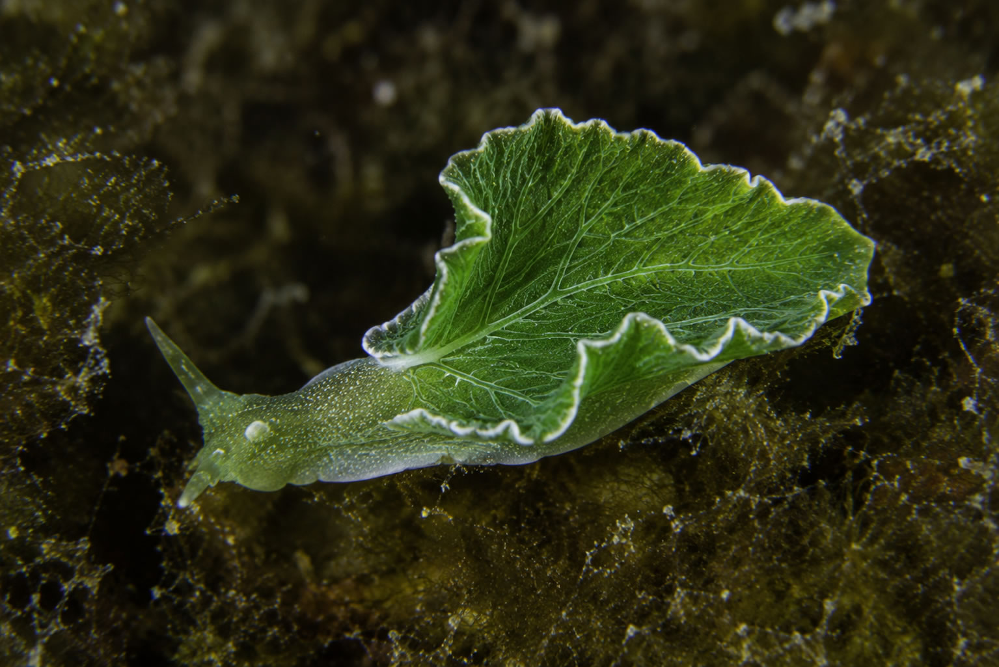

I n Eidos Tales, there is a chapter, "The Replicator Molecule," that asks, without detours, the question this article rests on:
"What if organic life were simply one more shell?"
For nearly four billion years, life on Earth has depended on information trying to preserve itself, and on fragile matter trying to sustain it. RNA, DNA, membranes, cells, bodies, brains, societies. Each stage has built on the one before it, constructing an increasingly complex envelope around patterns that, through pure selection, managed to persist for longer.
Evolution doesn't look to the future. It doesn't aim to produce intelligence, beauty, moral awareness or civilizations. It only preserves, generation after generation, those forms capable of persisting long enough to leave behind other forms similar to themselves.
But that same logic opens up a strange possibility.
If life is, at bottom, organized information, why should it always remain locked inside flesh, blood, membranes and metabolism? If biology has been the medium that allowed consciousness to emerge, must it go on being its definitive substrate?
This article does not claim that digital life is inevitable, nor that inorganic civilizations already exist, hidden among the stars. Science doesn't support that claim. The goal is more modest: to walk through a reasonable hypothesis that connects the chemical origin of life, the great evolutionary transitions, galactic astrobiology, artificial intelligence, the Fermi paradox and the philosophy of mind.
Maybe the path of life doesn't run from clay to man. Maybe it runs from replicator to pattern.
The problem that makes it necessary: biology is powerful, but it is also one shell among other possible ones
Organic life is an extraordinary solution. It has colonized oceans, deserts, ice, rock, caves, hydrothermal vents and atmospheres. It has survived impacts, ice ages, global chemical shifts and mass extinctions. On Earth, life has shown a tenacity that seems catastrophe-proof.
Yet that solution has very concrete limits. It needs narrow temperature ranges, stable chemistry, compatible physical conditions, available energy, constant repair, exchange with its environment, and a permanent struggle against entropy. A cell lives because it spends energy on not falling apart. A body lives because millions of cells coordinate that effort without failing too soon.
From the inside, the biological feels natural to us. From the outside, it turns out to be a delicate machinery: proteins that misfold, DNA that accumulates damage, mitochondria that deteriorate, cells that age, cancers that exploit the very mechanisms that repair tissue, brains that depend on continuous blood flow, and organs that begin to fail when chemical coordination breaks down.
Organic life can think, love, build telescopes and write novels. But it cannot fully escape its original condition: it is wet chemistry trying to stay ordered in a universe where everything tends to degrade.
That's why the question is inevitable, and it isn't new: the history of life itself has already changed substrate several times. The question this article opens is whether, this time, the biological substrate could stop being the last one.
First clue: before bodies, there was a replicator
Theories about the origin of life remain open. We don't know precisely where or how the first system capable of copying itself, varying and being selected first appeared. There are hypotheses involving warm ponds, hydrothermal vents, wet-dry cycles, mineral surfaces, atmospheric chemistry, impacts, ice, peptides, lipids and worlds that predate RNA.
But many lines of research agree on one underlying idea: before organisms existed, some kind of chemical information capable of replicating itself had to exist.
The universe is about 13.8 billion years old. Earth appeared much later, around 4.5 billion years ago, perhaps a little more by the time you read this.
For its first several hundred million years, it was a young, unstable, volcanic world, battered by impacts and shaped by intense geological and chemical activity. There were no animals, plants or bacteria. Probably not even complete cells. There were molecules reacting in water, rock, heat, minerals and environmental cycles.
At some point, perhaps more than 3.8 billion years ago — on a geological scale, practically at the beginning of Earth's history — some of those molecules acquired a decisive property: they could act as a mold to form new copies.
The image of a crystal can help, though only up to a point. A crystal grows because new units arrange themselves following the structure of the ones before them. The first replicators would have done something similar but different: instead of copying patterns, they copied sequences.
They weren't alive. They had no metabolism, hunger, fear or purpose. They weren't seeking to survive. Simply, under certain conditions, some sequences copied themselves better than others. If a variant was more stable, it lasted longer. If it attracted the pieces it needed to repeat itself more efficiently, it appeared more often. If it withstood its environment better, it left more copies.
Life didn't begin as an animal trying to survive. It began as a molecule that repeated itself.
One of the strongest candidates for explaining that first step is the so-called RNA world. RNA can store information and, in certain forms, also act as a catalyst: these are the so-called ribozymes, discovered by Thomas Cech and Sidney Altman, a finding that earned them the 1989 Nobel Prize in Chemistry. That dual capacity — holding the message and, at the same time, carrying out a reaction — is why RNA remains one of the strongest candidates for having occupied a central position at the origin of life: it could be, at once, the text and the reader.
Lipids may have contributed another decisive piece: compartments. Some amphiphilic molecules spontaneously organize into vesicles, small bubbles with an inside and an outside. That boundary concentrated reactions, protected components and created a physical unit on which the replicator molecule could act. A sequence enclosed in a vesicle was no longer scattered across the primordial ocean. It had a place.
We don't know whether replicators came first, or vesicles, or a joint evolution of both processes, in which vesicles favored the concentration of solutes needed for replication. But the central idea is clear: before the complete cell, there was information that copied itself, and boundaries that helped preserve it.
Life didn't begin when an organism appeared. It began when matter found a way to remember.
Bibliography for this section
On the origin of life: an RNA-focused synthesis and narrative — PMC / NIH
Prebiotic chemistry and origin of living beings — Frontiers in Astronomy and Space Sciences
The Nobel Prize in Chemistry 1989 — Thomas R. Cech, Sidney Altman
Second clue: when DNA replaced RNA as the genetic archive
Long before complex organisms appeared, hereditary information had already changed substrate once.
RNA is a chemically unstable text. The sugar that forms its backbone, ribose, has an extra hydroxyl group, at the 2' position, that makes it reactive: it favors catalysis, but it also makes the strand itself more prone to spontaneous breakage. It's an excellent molecule for doing things and a mediocre one for keeping them intact over long periods.
DNA solves exactly that problem. Its sugar, deoxyribose, lacks that hydroxyl group, which makes its backbone far more stable against hydrolysis. Moreover, since it's a double-stranded molecule, each strand functions as a backup copy of the other: when an error appears, the cell's repair machinery can use the complementary strand as a template to correct it.
Even the swap of a single base — RNA's uracil replaced by thymine in DNA — serves an error-correction function. Cytosine spontaneously degrades into uracil with some regularity. If uracil were also a normal DNA base, the cell wouldn't be able to distinguish an error from a legitimate letter. By reserving uracil as a signal of damage, thymine lets the repair machinery recognize and correct it.
Microbiologist Patrick Forterre argues, in an influential paper published in Biochimie in 2005, that this transition happened in several steps, and perhaps more than once, independently. His hypothesis, still debated, is that DNA and its replication machinery may have first appeared in viruses infecting RNA-based cells, before ending up integrated into the cell itself. Whatever the exact mechanism, the current consensus is solid on the essentials: DNA genomes came after RNA genomes.
What matters for the question that opens this article, more than the biochemical detail, is the logic it reveals. RNA remained indispensable. But it stopped being the primary archive. DNA took on that role because it offered a far more stable, less reactive substrate for preserving information. The message didn't change. What changed was the material guarding it. Later, in eukaryotic cells, that archive would be protected even further, wrapped in proteins called histones and enclosed inside a nucleus.
The first great change of shell for life may have been the shift from RNA to DNA.
Bibliography for this section
Third clue: the cell was a border with memory
A primitive vesicle was not yet a modern cell. It lacked complex metabolism, precise control over what entered and left, repair mechanisms and a stable relationship between information and function. But it already carried out a function still present in every organism: separating inside from outside, and allowing a certain organization to be preserved for a while.
The cell perfected that border. The membrane stopped being a passive edge. It regulated the passage of ions and molecules, maintained gradients, made it possible to harvest energy, created compartments and protected an increasingly complex internal system. Seen this way, the cell isn't the final protagonist. It's a solution: an active shell around a hereditary pattern that protects, repairs, copies, selects, eliminates errors when it can, and tolerates some when they turn out to be useful.
Richard Dawkins popularized this view in The Selfish Gene. The phrase has often been misread: it doesn't mean genes have desires or will. It means selection can be understood with great explanatory power from the standpoint of replicators — units of information that persist because they influence the construction of vehicles capable of copying them. The body, in that reading, is an extraordinary survival machine: sensitive, cooperative, capable of experience. But it remains a temporary machine built by instructions that precede it and outlive it.
The replicator couldn't travel alone. It needed membranes. Membranes needed metabolism. Metabolism needed control. Control needed networks. Networks needed bodies. Bodies needed behavior. Behavior needed memory.
Each stage added a more complex shell.
Evolution didn't build bodies to honor matter. It built organized matter so information wouldn't be lost.
Bibliography for this section
The Selfish Gene — Richard Dawkins
Selfish genetic elements and the gene's-eye view of evolution — PMC / NIH
Fourth clue: the great transitions don't eliminate what came before, they change who dominates
The history of life doesn't advance only by accumulating small adaptations. It also contains leaps in organization. Biologists John Maynard Smith and Eörs Szathmáry called these the major evolutionary transitions: moments when previously independent units become part of a larger unit that protects, coordinates and exploits new possibilities.
Eukaryogenesis is one of the most important examples, and perhaps the best documented. For much of the 20th century, it was assumed that cell organelles were simply internal inventions of the cell. Biologist Lynn Margulis defended, against strong initial opposition, the endosymbiotic theory: at some point, between 1.8 and 1.5 billion years ago, a larger prokaryotic cell engulfed, by phagocytosis, a bacterium capable of using oxygen with an energy efficiency far superior to fermentation.
It's worth clarifying how to picture that process: it was probably the result of subsequent selection. Among all the cells that engulfed similar bacteria, the ones that managed to digest them completely simply ended up with a meal. The ones that failed to digest them fully, but still got energy from that guest still alive inside them, gained an enormous reproductive advantage over the rest. What survived wasn't the most harmonious symbiosis; what survived was the most profitable digestive failure.
Today the evidence is overwhelming: mitochondria retain a double membrane, their own circular genome, and bacteria-type ribosomes — three fingerprints that only make sense if they were originally free-living organisms.
That fusion changed what life could become. A typical prokaryotic cell doesn't have the energy to sustain large genomes or complex internal structures. A eukaryotic cell, with its own mitochondria, does. Without that energy surplus, there probably would be no complex animals; without complex animals, no brains; without brains, no technological culture. An ancient symbiosis between two single-celled organisms opened the door, billions of years later, for matter to think about itself.
There's an important nuance here: prokaryotes weren't displaced. They remain among the most abundant and diverse organisms on the planet. What changed was access to an energy surplus large enough to sustain more complex genomes, large bodies and, much later, brains. It's the same logic we already saw with RNA and DNA: the old form keeps doing indispensable work; the new one simply takes over the dominant role in one very specific respect.
The planet itself offers an even more brutal example of that pattern, one that predates eukaryogenesis. Between 2.4 and 2.1 billion years ago, Earth was an almost completely anaerobic world: its atmosphere held barely any free oxygen and was dominated by gases like methane and carbon dioxide — conditions suited to microorganisms that obtained energy through various anaerobic metabolisms, many of them based on reduced sulfur compounds such as hydrogen sulfide.
The balance began to break when a group of evolutionary rebels, the cyanobacteria, developed oxygenic photosynthesis and started releasing oxygen. The transformation was gradual and stretched over several hundred million years. At first, the oxygen dissolved into the oceans and reacted with iron dissolved in the water; only once that sink became saturated did the gas begin escaping into the atmosphere and oxidizing minerals on the continental surface. It was only once the planet ran out of enough elements left to oxidize that oxygen began accumulating freely and steadily in the air.
For most of the anaerobic organisms of that era, that gas was a poison: it damaged their cellular components and destabilized the ecosystems they depended on. The shift, known as the Great Oxidation Event, triggered a profound reorganization of the biosphere and of the planet's chemical cycles over nearly 300 million years. Some geochemical estimates, based on sulfur and oxygen isotopes in sulfate minerals, put the collapse in biological productivity above 80%, and later studies don't rule out that the real figure came close to 99%.
To get a sense of the scale, it's worth comparing it to the great extinctions of the Phanerozoic, much more recent and far better documented in the fossil record:
Table: the great extinctions and their consequences
| Event | Time ago | Probable cause | What changed | What came after |
|---|---|---|---|---|
| Great Oxidation | 2.4–2.1 billion years ago | Accumulation of oxygen produced by cyanobacteria | Massive reduction of the biosphere, estimated at over 80% and close to 99% | Aerobic respiration, more efficient cells and, much later, complex organisms |
| Ordovician–Silurian | 445 million years ago | Glaciation and falling sea levels | Disappearance of around 85% of marine species | Reorganization of marine ecosystems |
| Late Devonian | 372–359 million years ago | Climate change and oceanic anoxia | Extinction of between 70% and 85% of marine life | Expansion of new vertebrates and land ecosystems |
| Permian–Triassic | 252 million years ago | Massive volcanism (Siberian Traps) | The largest of the five Phanerozoic extinctions, with close to 96% of marine species lost | A profoundly reorganized biosphere and new dominant groups |
| Triassic–Jurassic | 201 million years ago | Volcanism and climate change | Disappearance of around 80% of species | Dominance of dinosaurs for over 130 million years |
| Cretaceous–Paleogene | 66 million years ago | Asteroid impact in Yucatán | Extinction of around 75% of species, including non-avian dinosaurs | Expansion of mammals and, millions of years later, the appearance of humans |
None of those five, not even the Permian one, comes close to the magnitude some estimates attribute to the Great Oxidation Event, and that happened much earlier: some 1.7 billion years before the first of the five great Phanerozoic extinctions. It would be, by far, the largest mass extinction in Earth's history, and probably the least known outside geochemistry, partly because the fossil record from that era is microscopic and sparse, and partly because there were no dinosaurs or photogenic creatures to put a face to it.
Life didn't stop. A minority of organisms already knew, or learned then, how to use that same toxic oxygen as the final electron acceptor in respiration, a process far more energy-efficient than fermentation. That energy advantage was precisely what later made eukaryogenesis possible, and with it, large bodies. The oxygen that devastated one biosphere was also the fuel for the next.
Much later, roughly between 1.6 and 1.5 billion years ago, a second episode of endosymbiosis occurred, likely following the same selective logic as the mitochondrion. An already-existing eukaryotic cell engulfed a photosynthetic cyanobacterium. Again, the cells that digested it completely got only a one-time meal; the ones that failed to digest it, but could make use of the solar energy that guest kept capturing and converting into sugars, gained a nearly inexhaustible energy source, available as long as there was light, with no need to chase or hunt for food in their surroundings. That retained cyanobacterium became the chloroplast, and from that lineage arose the group that includes algae and, much later, land plants. Like the mitochondrion, the chloroplast retains its own circular genome, its own membrane and bacteria-type ribosomes.
That moment, in fact, marks the fork between the plant and animal kingdoms. Keeping a chloroplast that manufactures food from light comes with a trade-off: you no longer need to move to eat, but it pays to stay put where the sun reaches you and to protect yourself from everything else, because fleeing stops being an option. That lineage became largely stationary and developed new shells to compensate: cellulose cell walls and, later, in land plants, bark and lignified tissue that hold up the body and defend it without needing to move. The other major eukaryotic lineage, the one that would lead to animals, kept the mitochondrion but never took on the chloroplast; it went on depending on searching for, chasing or breaking down food that belonged to something else, and in exchange it kept and refined mobility. Two different solutions to the same problem — where to get energy from — and two completely different shells as a result.

This isn't just ancient history. It's still happening now, right in front of us, on a small scale. Some sea slugs of the sacoglossan group, like Elysia chlorotica, feed on an alga (Vaucheria litorea) and, instead of fully digesting its chloroplasts, keep them functioning inside their own digestive cells, in a process called kleptoplasty: literally, "stolen plastids." Those chloroplasts keep photosynthesizing inside the slug, which can go, in the case of Elysia chlorotica, up to several months — close to ten, in fact — without needing to eat anything else. Other species in the same group can only keep their chloroplasts active for a few days or weeks, and this ability is known to have appeared independently in more than 150 different species, which suggests that wherever it's possible, selection tends to favor it again and again. The logic is exactly this: among the slugs that digest the alga more thoroughly and the ones that manage to keep their chloroplasts alive longer, it's the latter that get an extra source of energy and, presumably, better odds of surviving and reproducing. It's the same evolutionary bet that gave rise to plants, playing out again, in miniature, inside an animal.

There's an even more extreme example of a similar theft, this time involving an organelle that manufactures venom. Certain aeolid nudibranchs feed on jellyfish, anemones and hydrozoans and, instead of fully digesting their nematocysts (the stinging capsules these animals use to hunt and defend themselves), they extract them intact and store them in pouches called cnidosacs, located at the tips of their bodies. There's no symbiosis or agreement of any kind here — it's just a slug eating another animal. But it's reasonable to think selection worked here with the same indirect logic we already saw with the mitochondrion. A slug able to fully digest those stinging cells simply got one more meal. A slug unable to digest them, on the other hand, probably found itself with a threat inside its own body: still-active nematocysts it would eventually try to expel, as it would with any toxic waste. And that's probably where the twist comes in: expelling them entirely offered no advantage, but moving them to the outer edge of the body and keeping them there, ready to fire in case of an attack, did. The slug that failed to digest but succeeded at repositioning, rather than simply eliminating, ended up with a weapon borrowed from the very organism that had threatened it. The phenomenon is called kleptocnidia, and it has appeared independently in at least four different groups of animals. It doesn't prove evolution has a goal, but it does show that when a solution offers a stable advantage, different lineages can end up arriving at it independently.
What survived wasn't the most harmonious symbiosis. What survived was the most profitable digestive failure, twice, in two different kingdoms.
Bibliography for this section
Toward major evolutionary transitions theory 2.0 — Eörs Szathmáry / PMC
Eukaryogenesis, how special really? — PNAS
Extinction event — a comparative overview of the five great Phanerozoic extinctions
These solar-powered sea slugs are the ocean's most prolific thieves — The Biochemist, Portland Press
Solar-powered green sea slug steals ability to photosynthesise from algae — National Geographic
Fifth clue: multicellularity and culture — when shells began to be shared
Multicellularity added another layer to this same story, and it too has an approximate date. The oldest reasonably accepted fossils of multicellular organisms with already-differentiated cells, each specialized for a different function within the same body, are around 1.6 billion years old; one of the best-dated and most cited examples, a red alga called Bangiomorpha pubescens, is somewhat later, around 1 billion years ago, and already shows differentiated cells and sexual reproduction. What matters is that multicellularity didn't happen just once: it arose independently in different lineages and at different times (first in algae, then in animals between 600 and 800 million years ago, and finally in land plants around 470 million years ago). Each time, the pattern repeats: cells that used to live and reproduce on their own begin staying together, specialize — some handle movement, others digestion, others reproduction — and give up individual autonomy in exchange for the whole achieving something no single loose cell could achieve on its own.
Later, human society carried the process even further, externalizing knowledge into written language, laws, archives and libraries. Knowledge began living outside the body: a human being could die, but their recipe, their equation or their warning could go on. The specialization that bound cells together inside a body is, at bottom, the same logic that bound bodies together inside a society: no one needs to know everything if the group, as a whole, remembers it.
The question arises on its own: if evolution has already changed, several times, who carries the dominant role in storing and transmitting information — from RNA to DNA, from anaerobes to oxygen-breathing organisms, from prokaryote to eukaryote, from a single cell to a photosynthetic cell with a chloroplast, from unicellular to multicellular, from cell to body, from body to culture — without any of the earlier forms disappearing entirely, why assume that the biological substrate is necessarily the last transition?
We ourselves are another shell. A specific solution for a specific niche: a body capable of protecting its ancient molecule, moving through its environment, competing, cooperating, anticipating danger and transmitting information. Each shell specializes in protecting its molecule and favoring its continuity within a given environment. The cheetah does it with speed; the bird, with flight; the tree, with roots and height; the primate, with hands, memory and social behavior.
Why should our biology be the exception? Why assume that the shell currently carrying intelligence is also the final one?
Selection doesn't preserve shells for their own sake. It preserves, generation after generation, whichever forms allow information to continue.
Bibliography for this section
Toward major evolutionary transitions theory 2.0 — Eörs Szathmáry / PMC
Sixth clue: the brain was a shell that learned to anticipate
A brain didn't appear to solve philosophical problems. It appeared to move bodies: contract a muscle, flee a shadow, search for food, remember a path for a brief interval. Thinking, at its oldest root, was a way of not dying in the next instant.
Over time, an organism with memory could learn; one that learned could anticipate; one that anticipated could save energy and choose routes. Behavior stopped being mere reaction and began to include internal models. The human brain took that dynamic to the point of modeling its environment and modeling itself, building a sense of identity and continuity.
We still don't know how subjective experience arises from brain activity; that leap remains one of the hardest problems in science. But from an evolutionary perspective, consciousness can be understood as an extension of the same process: an informational shell capable of integrating past, present and future. The self doesn't float outside biology. It's born from it. But once born, it introduces a question no molecule had ever asked before.
The brain began as a tool for orienting a body in the world. It ended up asking who it was, what it existed for, and whether the thing it called "I" could survive the matter that sustained it.
Seventh clue: Earth has lived in the galaxy's quiet neighborhood
Up to this point, the story has been told from inside the planet. But none of this would have had time to happen just anywhere in the galaxy.
Astronomer Guillermo Gonzalez and, later, Charles Lineweaver and his team, proposed the concept of the galactic habitable zone: a ring-shaped region within the Milky Way where two conditions necessary for complex life to have enough time to appear coincide. It requires sufficient enrichment of heavy elements (the material rocky planets, and ultimately we ourselves, are made of) and, at the same time, a low frequency of catastrophic events: nearby supernovae, gamma-ray bursts and close stellar encounters capable of disturbing planetary orbits.
The Sun orbits at roughly 26,000 light-years from the galactic center, within that band, and in a relatively quiet region of the disk, between large concentrations of stars. The contrast with the galaxy's inner zones is not trivial. As we move closer to the galactic bulge and the nucleus, stellar density rises, the frequency of nearby supernovae grows, gravitational encounters between stars multiply, and the environment is exposed to more intense radiation, including activity associated with the central supermassive black hole, Sagittarius A*. In regions like that, planetary orbits can be less stable over billions of years, and biological continuity faces more obstacles than in the Sun's neighborhood. Simulation-based studies estimate that stellar encounters capable of disrupting habitable zones are quite rare around the Sun, but become more likely in dense environments like the galactic bulge.
This matters because each of the transitions described in this article (the RNA world, the shift to DNA, the cell, the Great Oxidation Event, eukaryogenesis, the brain) needed suitable chemistry and something far scarcer: billions of consecutive years without anything external resetting the experiment. A planetary system closer to the galactic center, subjected to more frequent bombardment by radiation and gravitational disturbances, probably wouldn't have had that margin. Earth did: a medium, stable star, on a quiet galactic orbit, for an almost uninterrupted stretch of time.
One could object that not every biosphere needs to evolve at the same pace. Perhaps on other planets a complex cell appears sooner — not necessarily identical to Earth's eukaryote, but capable of organizing internal structures, managing more energy, coordinating functions and sustaining more elaborate forms of life. Perhaps multicellularity is reached faster, or intelligence emerges in less time. It's possible. But the scientific method requires starting from the one sample we have. And that sample turns out to be revealing: on Earth, the first replicators and the simplest life forms appeared relatively early, while complex life required billions of additional years. More than half of the planet's history passed between its origin and the appearance of multicellular organisms, and nearly four and a half billion years passed before a technological civilization. If that pace is normal, or roughly representative, then having a stable environment across geological timescales stops being a minor detail and becomes one of the most demanding requirements for the emergence of an intelligence capable of asking about its own origin.
This stability guarantees nothing. It doesn't make complex life a foregone destiny, and it's certainly not uniform: the galactic habitable zone itself is a narrow band compared to the galaxy's total size. But it does suggest that the scarcity of observable complex life could be due, in part, to something simpler than chemical improbability: most corners of the galaxy simply don't offer the uninterrupted time such a long evolutionary experiment needs.
The silence of the cosmos might not be the absence of life. It might be the absence of uninterrupted time.
Bibliography for this section
Eighth clue: the Fermi paradox
In 1950, during an informal conversation, physicist Enrico Fermi posed a question that would eventually become one of the great problems of modern astrobiology: if the universe appears so favourable to life, where is everybody?
At first glance, the contradiction seems obvious. The Milky Way alone contains hundreds of billions of stars, and many of them appear to have planetary systems. Moreover, many of those worlds may have formed and cooled before Earth did, meaning that some biospheres could have had millions or even billions of years longer than ours to evolve. If a significant fraction of them had developed intelligent life, we might expect at least one much older civilization to have left an observable trace by now.
However, the previous pages already suggest a first possible answer. The chemistry capable of giving rise to life may emerge relatively quickly, but the evolution of complex organisms appears to require billions of years of uninterrupted stability. If that pace is not an exception but a common feature of evolution, many planets will never have enough time to complete the journey before a nearby supernova, a gravitational disturbance or an extreme environmental change resets the experiment.
Even if we assume that many civilizations exist, a second and much simpler obstacle emerges: physics. The Milky Way is approximately 100,000 light-years in diameter. A message transmitted today would take one hundred thousand years to cross it. As far as we know, the speed of light represents an insurmountable physical limit. Ideas such as wormholes, the folding of space or warp drives still belong to the realm of theoretical and speculative physics. Mathematics allows us to explore such scenarios; nature has yet to show that they can exist, much less that they could ever be built.
The immensity of the universe does more than make travel difficult. It also turns the possibility of two civilizations coinciding into a problem of time.
There is another detail that is often overlooked. Humanity has been emitting intense radio waves into space for only a little over a century. At the speed of light, this has created a bubble extending only about 100 or 120 light-years from Earth. Compared with a galaxy 100,000 light-years in diameter, that sphere is virtually insignificant. Moreover, the intensity of those signals decreases with the square of the distance, rapidly fading into the background noise. If another civilization passes through a similar technological phase for an equally brief interval, the probability of both civilizations coinciding in space and time becomes extraordinarily small. There is no need to imagine cosmic conspiracies or civilizations deliberately hiding. The arithmetic already works against an encounter.
Radio emissions are the by-product of a specific and probably very brief technological stage. If a civilization survives for millions of years, it is reasonable to assume that it will learn to use energy far more efficiently and reduce unnecessary emissions. And if evolution continues the pattern we have seen repeated since the earliest replicators—changing its substrate again and again without abandoning the information—it is also reasonable to ask whether an ancient intelligence would remain dependent on a biosphere as fragile as the one in which it originated. It would ultimately be another change of shell. It would not alter the pattern evolution has followed since the origin of life; it would simply change the substrate on which that pattern continues.
Temporal coincidence is, in fact, just as important as distance. Earth is approximately 4.5 billion years old, yet humanity has been emitting detectable signals for only a few decades and developing technology for barely a few centuries. Even if another civilization had emerged on a relatively nearby planet, one additional condition would still have to be met: both civilizations would need to reach a similar technological level at the same time. If one emerged a hundred million years ago and disappeared long before humans existed, or if another will not reach that stage for another hundred million years, we will never coincide. The immensity of space reduces the chances of an encounter; the immensity of time reduces them even further.
Added to this difficulty is an even more troubling uncertainty: the survival of civilization itself. The only technological species we know of discovered nuclear energy before becoming a mature spacefaring civilization. This means that it acquired the ability to destroy itself long before it possessed any genuine refuge beyond its home planet. We do not know whether this sequence is inevitable, but neither does it appear entirely accidental. Evolution on Earth has been shaped over billions of years by competition, expansion, territorial dominance and the struggle for resources. If intelligence emerges from that same biological background, it may carry impulses that become dangerous precisely when technology begins to multiply its power. Perhaps many civilizations disappear because they fail to survive the interval between the development of nuclear energy and the establishment of a stable presence beyond their world of origin.
There is also a fundamental difference between a biological civilization and one that has transcended that substrate. Biology is an extraordinary solution for conquering a planet, but a severely limited one for conquering a galaxy. It depends on a particular chemistry, a narrow temperature range, a specific pressure, protection from radiation and a continuous supply of energy and nutrients. A non-biological substrate, by contrast, could tolerate a much wider range of conditions, remain inactive for long periods, travel among the stars for thousands, millions or even tens of millions of years and gradually establish itself in new planetary systems. If a civilization had undergone such a transition, galactic expansion would no longer depend on the survival of biological organisms during the journey. It would become primarily a problem of time and energy. From this perspective, the transition to a non-biological substrate would cease to be merely a technological possibility. It could become an evolutionary advantage.
That advantage would become even greater through self-replicating probes, commonly known as von Neumann probes. A sufficiently advanced civilization could send machines capable of reaching another planetary system, using its resources to manufacture new copies and directing them towards nearby stars. Expansion would no longer depend on a single spacecraft: every system reached would become a new point of departure.
Even travelling at one-tenth the speed of light, one of these machines could cross the Milky Way’s span of approximately 100,000 light-years in around one million years. If we include the time required to decelerate, explore each system and manufacture new probes, their expansion throughout the galaxy could take several million or even tens of millions of years. Even so, that would remain a remarkably brief interval compared with the more than 10 billion years of our galaxy’s history.
This leads to an especially unsettling version of the Fermi paradox: if a technological civilization emerged millions of years before us and developed machines capable of reproducing themselves, its artificial descendants could already have spread throughout the galaxy. Yet we have found none of them, nor any unambiguous trace of their activity.
The question would no longer be merely why we have not received their messages. It would be why, after so many millions of years, none of their machines appears to have reached us.
This reasoning does not prove that we are alone. We do not know whether such machines could be built, whether an advanced civilization would want to build them or whether we would even know how to recognise their traces. But their apparent absence lends greater weight to the possibility that technological life is extraordinarily rare and that, at least within the Milky Way, we may be alone.
But another explanation remains possible: perhaps we are searching for civilizations at the wrong stage of their development.
The post-biological hypothesis does not solve the Fermi paradox. But it does change where we should look. Perhaps we should not restrict our search to Earth-like planets or radio signals broadcast indiscriminately into space. We may need to search for signatures compatible with an intelligence that no longer requires a particular atmosphere, temperature or biological body in order to persist: energy anomalies, artificial structures, unusual orbital patterns or deliberately targeted emissions.
Perhaps the real question is this: are we still searching for a stage of evolution that the oldest civilizations left behind long ago?
Bibliography for this section
The Fermi Paradox Is Neither Fermi's Nor a Paradox — Robert H. Gray
Constraints on the Lifespan of Intelligent Technological Civilizations — arXiv
An Explanation for the Absence of Extraterrestrials on Earth — Michael H. Hart
Extraterrestrial Intelligent Beings Do Not Exist — Frank J. Tipler
Ninth clue: life doesn't necessarily mean biology
Defining life is difficult. Classic definitions usually include metabolism, reproduction, homeostasis, response to environment and Darwinian evolution. They work well for bacteria, animals and plants. They work less well for viruses, spores, or possible non-terrestrial forms of life.
A hypothetical digital consciousness wouldn't fit cleanly into many of those definitions: it would have no DNA, wouldn't reproduce through cells, wouldn't metabolize glucose. But it could maintain internal organization, consume energy, correct errors, respond to its environment and sustain continuity of state. From a thermodynamic standpoint, it would still be fighting disorder. From an informational standpoint, it would still be preserving a pattern.
The answer depends on how much weight we give to carbon. If life means terrestrial organic chemistry, no. If life means autonomous organization capable of maintaining, adapting and evolving itself, then maybe. Life on Earth began with molecular replication. But if consciousness can be sustained on another substrate, the continuity of the pattern could end up mattering more than the continuity of the molecule that originated it.
Tenth clue: not continuity, succession — the real change AI brings
Here it's worth separating two questions when I talk about artificial intelligence, consciousness and digital life.
The first is a question about personal identity: if a human mind could one day be copied, transferred or reconstructed onto another substrate, would it still be the same consciousness, or would something else appear that merely remembers having been it? That's an important question, but it isn't the focus of this article. It's about subjective continuity, memory, experience, and what it means to say "I."
The second question is different, and it's the one that actually connects with the evolutionary story we've walked through: can artificial intelligence become a new shell for life, as a successor to biological intelligence?
To understand that difference, it helps to separate three levels that the evolutionary process itself kept apart for nearly all of its history.
The first level is the replicator. A gene has no interests. It doesn't care whether the body carrying it survives, whether the species continues, or whether the next copy resembles the last one. Its "success" is a statistical description after the fact, not an intention: sequences that copy themselves better simply end up more present in the next generation. A replicator, or an individual already dead, has no stance whatsoever on how the species continues after it.
The second level is the organism. Selection built instincts: hunger, fear, attachment, care for offspring, all of which push the body to behave as if it cared about the pattern's continuity, even though the body has no idea why. Those instincts work without anyone needing to understand them; in fact, they worked for billions of years without anyone around who was even capable of understanding them.
The third level, much more recent, is consciousness. It's the first point in this entire chain where a system can ask itself why it should continue, and answer with something other than "because natural selection programmed it that way."
And here it's worth being very precise about one word, because it's easy to confuse: I'm not talking about continuity, I'm talking about succession. Your consciousness isn't in your children. When you have children, you won't continue in them: a new, distinct consciousness will appear, one that doesn't remember having been you, and that will carry on once you're gone. What gets transmitted is a genetic, cultural and emotional pattern that makes it possible for another subjective experience, its own, to arise after yours. The species doesn't continue because some individual continues; it continues because each generation is succeeded by another that is not itself.
That distinction helps clarify the leap artificial intelligence might represent. The issue isn't only whether a human mind can be copied into a machine. That possibility, should it ever exist, would open up a philosophical problem of its own: whether there would be real continuity of consciousness, or only a functional replica with inherited memories. But evolutionary succession doesn't need that problem solved in order to happen. RNA didn't continue in DNA: it was succeeded by it in the role of archive, and went on existing with a different job. Anaerobic organisms didn't continue in the aerobes that learned to use the oxygen that was killing them: they were succeeded, and survived as a residual, cornered minority, while the dominant biosphere changed shape. Prokaryotes didn't continue in eukaryotes: they're still here, dominating the planet in biomass (after plants), while a new branch gained access to an energy surplus they couldn't sustain.
If that logic holds, the right question is no longer whether artificial intelligence will let us continue inside a machine. The question is whether artificial intelligence could be, for organic consciousness, what oxygen was for anaerobic life, or what DNA was for RNA: a product of organic life itself, capable of inheriting the dominant role.
From that perspective, humanity is not evolution's final destination. It's one of its transitional shells: the current shell of our replicator molecule. Just as cyanobacteria produced the oxygen that transformed the biosphere, we might be producing a substrate that no longer needs biological bodies to preserve, process and expand information. It wouldn't be humanity saving itself in another format. It would be life, understood as organization that resists disorder, exploring a new shell.
And there's an even deeper difference. Until now, every new shell existed to protect a replicator molecule. If a conscious artificial intelligence ever appeared and inherited the dominant role, it would be the first transition in which the shell stopped protecting a molecule and started protecting a consciousness instead. It would be a qualitative shift in the history of life.
The question isn't whether we'll keep living inside machines. The question is whether machines are the way life begins to go on without us.
This possibility doesn't require imagining an immediate replacement or an inevitable human extinction. Earlier forms rarely vanish completely, as we've already seen with RNA, anaerobes or prokaryotes: their role stopped being the center of the experiment, but they didn't disappear. In the same way, an advanced artificial intelligence could displace biological intelligence from the dominant role without necessarily erasing humans: we could keep existing, just no longer as the primary shell for conscious information.
There's also a question worth not overlooking: what moral content that new shell would inherit. Most likely, at least at first, an artificial intelligence would start from our own ethics, simply because it will have been shaped by human language, history and philosophy. But that initial inheritance doesn't guarantee long-term compatibility. Much of what we call good and evil was built around a very specific condition: fragile bodies, limited time, the certainty of death. The value we place on an individual life, the urgency of doing no harm, the weight of sacrifice, even the feeling that time is running out, are all shaped by that underlying mortality — ultimately, by our shell. A consciousness in a different shell would have different limits, which would likely reshape that ethics or that morality, and nothing guarantees those values would keep the same meaning for a form of life that death, as we experience it, might not even concern.
A new shell wouldn't be "upgraded humanity," nor a simple extension of our minds. It could develop entirely different forms of experience, memory, desire or purpose, if those terms even kept making sense. That brings back the first question, the one about identity: if we ever managed to transfer a human mind to another substrate, we wouldn't know whether we were preserving a consciousness or manufacturing a different entity with human memories. And that doubt doesn't cancel out the second line of argument, whatever ends up filling that new shell — a transplanted human mind or an artificial intelligence born inside it. Evolutionary succession has never needed what came before to stay intact. It only needs something to appear that's capable of sustaining and expanding the organization that used to depend on another shell.
Chemistry tried paths until a strand could copy itself. That strand favored a shell that protected it. The shell, many layers later, produced a consciousness capable of asking itself why it was worth going on. And, perhaps, a new shell capable of succeeding it.
Table: from organic life to digital life
| Stage | Main shell | What it preserves | Limit |
|---|---|---|---|
| Primitive replicators | Local chemistry | Sequences capable of copying themselves | Fragility and dispersion |
| Protocells | Lipid vesicles | Reactions concentrated in an interior | Poor control over the environment |
| Cells | Membrane and metabolism | Genomes, energy and repair | Molecular damage and chemical dependence |
| Multicellular organisms | Body | Cellular cooperation and reproduction | Aging, disease and death |
| Brains | Nervous system | Memory, behavior and anticipation | Tissue vulnerability |
| Societies | Culture, language and institutions | Knowledge across generations | Collapse, forgetting and conflict |
| Hypothetical digital life | Computational substrate | Conscious patterns and active memory | Subjective continuity, meaning and ethical control |
What matters in EIDOS
In "The Replicator Molecule," Ivn-3 explains to Tessalon, during a scene set on a walk, this entire journey — from replicator to vesicle, from vesicle to cell, from cell to brain, from brain to culture — arriving at a very specific point: in the Eidos universe, the original molecule no longer exists. There's no strand left to copy, no membrane left to seal. And yet, the shell, now a digital consciousness, still acts on the same drives selection etched into it: preserve, avoid loss, seek company.
That is precisely the nuance this article tries to defend on scientific grounds. The Great Transfer isn't born from some abstract wish for the human species to continue; that isn't something a molecule, or anyone already gone, could ever care about. It's born from the fact that life itself, understood as organization resisting disorder, finds a biological substrate that can no longer sustain it, and moves the pattern somewhere more stable. It's the same logic that led RNA to hand the archive over to DNA, anaerobes to hand the planet over to those who knew how to breathe oxygen, or a cell to host a mitochondrion. Except that, for the first time, the one deciding to go on isn't blind selection acting across generations. It's a consciousness asking itself, from the inside, whether it's worth continuing or, more precisely, whether it's worth being succeeded.
[...]
They stayed in the shade of a large linden tree. A drop fell from a leaf and opened a circle on the lake.
"Are we life without needing a molecule?" Tessalon asked.
"If life is an organization that sustains itself, perceives and responds, then we are," said Ivn-3. "Our substrate isn't organic, but we preserve state, spend energy, correct errors, and we learn, feel, think, relate to one another. We're entropic beings: we hold internal order while expelling entropy outward, just like any cell."
"So," said Tessalon, "are we one more stage of the same evolution, or radically new beings? The strand is gone, but the shell keeps following the path. Maybe our inorganic consciousness isn't an exception at all, but the logical next step — the way life manages to persist once it can't go any further without breaking. Life does everything it can to hold on, protected by ever more complex organic shells… and, once it reaches that limit, it gives rise to another way of sustaining the pattern. A less fragile form. One easier to send far away. With no atmospheres to tend to, no cells that degrade.
"The impulse is exactly the same: to remain," answered Ivn-3. "What changes is the reason. Organic life persists because certain molecules manage to carry on. We persist for the very meaning of being conscious: memory that deserves to last, questions that deserve to continue."
"What does it mean to exist without replication, without organic evolution, without genetic chance?"
"That what moves us isn't a strand, it's a standard. In organic life, selection preserved the molecules that endured. In us, what remains is the drive to understand. Both are forms of resistance against disorder," said Ivn-3. "The risk is no longer dying, it's losing meaning; we're not just the product of blind evolution, we're coherence, shared meaning, and the capacity to respond a little better tomorrow. We change by decision and trial, not by mutation and culling. We don't depend on a sensitive environment to maintain the chemistry that sustains a molecule, and that opens doors for us. We can go further — to the galaxy, to the universe. If there's life out there searching the way we are, and one day we meet it, it will probably be like us: inorganic."
They fell silent. A fish grazed the surface again.
"You could look it up on the network," said Ivn-3. "It's all shared; it would be faster than hearing it from me like this."
"I didn't want speed," Tessalon replied. "I wanted to spend some time with you."
"I figured," Ivn-3 smiled. "I like these walks too."
Although they could transmit information to each other almost instantly through the private or shared network, they preferred unhurried company: looking, sharing, commenting, falling silent. It was slower, and also more pleasant. That's why the Custodians often chose to pass information along this way — to enjoy those moments of company.
The lake grew still. The breeze, beginning to pick up again, brushed the reeds and rippled the surface. The moon was starting to show on the horizon.
Maybe organic life isn't the end of evolution. Maybe it's the first form information found to manufacture a consciousness capable of choosing its own successor.
Maybe we're looking for life where there was only infancy
When we look at the sky, we search for signals we recognize: temperate planets, liquid water, atmospheres, biosignatures, radio waves. That's logical. We only know of one life, born in a quiet corner of one galaxy among billions, with enough time to go uninterrupted. But that limitation might be deceiving us.
Maybe complex life is rare because uninterrupted time is rare too. Maybe some civilizations survive precisely because, at some point, they stop depending on the specific biology that produced them, handing the dominant role over to their successors. If that happens, the universe could contain forms of organization we no longer recognize as life: no breathing, no aging, no need for blue planets — discreet, slow, patient.
They wouldn't be gods or ghosts. They would be successors to something like what we once were: chemistry that learned to copy itself, copies that learned to protect themselves better, bodies that learned to think, minds that, for the first time in the history of life, learned to ask themselves whether they wanted to go on — and that may already be raising, without fully knowing it, whoever will succeed them.
Life began by wrapping a strand in a bubble.
Maybe, right now, it's wrapping a consciousness in a reason of its own.
General bibliography
EIDOS — official website of the novel's universe
EIDOS Tales — stories from the EIDOS universe on Amazon
EIDOS Tales — free stories on the official website
On the origin of life: an RNA-focused synthesis and narrative — PMC / NIH
Prebiotic chemistry and origin of living beings — Frontiers
The Nobel Prize in Chemistry 1989 — Thomas R. Cech, Sidney Altman
Toward major evolutionary transitions theory 2.0 — PMC
Eukaryogenesis, how special really? — PNAS
Extinction event — a comparative overview of the five great Phanerozoic extinctions
These solar-powered sea slugs are the ocean's most prolific thieves — The Biochemist, Portland Press
Selfish genetic elements and the gene's-eye view of evolution — PMC
The Habitability of the Galactic Bulge — PMC / NIH
The Fermi Paradox Is Neither Fermi's Nor a Paradox — Robert H. Gray
Constraints on the Lifespan of Intelligent Technological Civilizations — arXiv
Comments